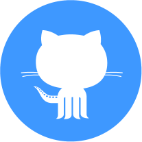

Hughes Meyer Studio
Website for a London based art studio. This is an ongoing project, a multi page website with a very strict space handling design. I have used Javascript and jQuery extensively for creating some of the features of the site, like a space optimizing responsive grid for navigating between elements inside a large project, a lens zoom effect to reveal subtle details and semi-fixed elements to accommodate the design. As the site has many pages using the same layout, I utilized the features of Gulp and Swig for templating.